Gig bookkeeping
CurbQuill
CurbQuill is an offline-capable web app for gig workers who keep their own books. Record delivery pay, tips and expenses as you go. When a deposit arrives, match it to the earnings behind it so the same money only counts once.

Data guide
Data & backups
- Where records live
- Your book lives in this browser’s IndexedDB on this device. A key derived from your vault password encrypts it with AES-256-GCM. The app has no account or automatic cloud sync.
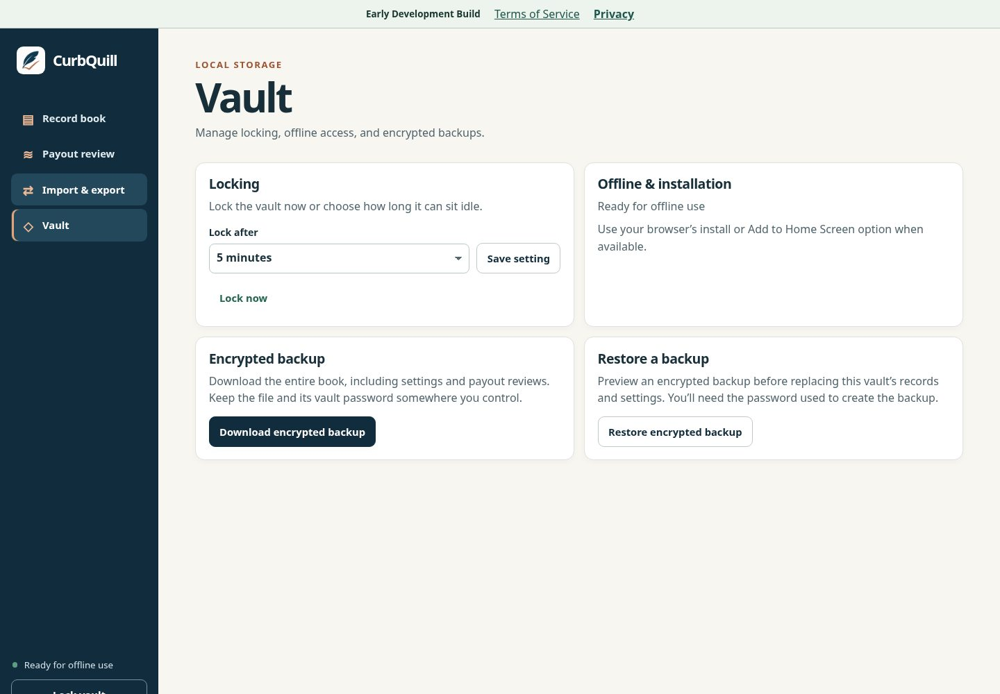
Desktop browser capture · fictional demonstration. - Make a backup
- In Vault, download an encrypted .cqvault file. It carries the records, payout allocations, review and correction history, import mappings and settings. Store the file somewhere you control and keep its password.
Desktop browser capture · fictional demonstration. - Restore your records
- Open a vault, select the backup and enter the password used when it was made. Check the record counts and totals before replacing the current book. The restored vault keeps its current password. Clearing site data removes the local copy.
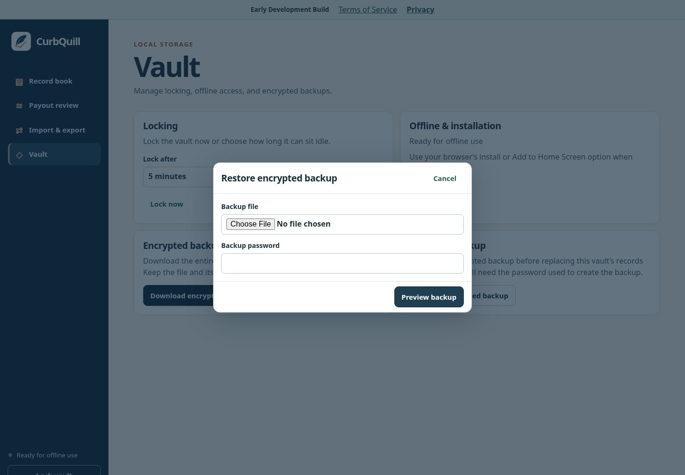
Desktop browser capture · fictional demonstration.


Keep a record book
- Earnings and expenses
- Enter a date, platform, USD amount, reference and category. Add an account or a note when it helps identify the transaction. Categories cover delivery pay, tips, fuel, vehicle upkeep, parking and tolls, supplies and platform fees.
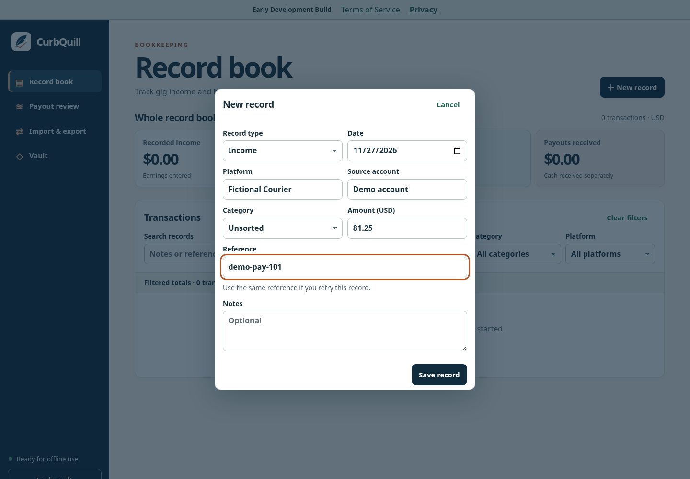
Desktop browser capture · fictional demonstration. - Book totals
- See recorded income, spending and the difference between them. A separate payout total tells you how much cash arrived.
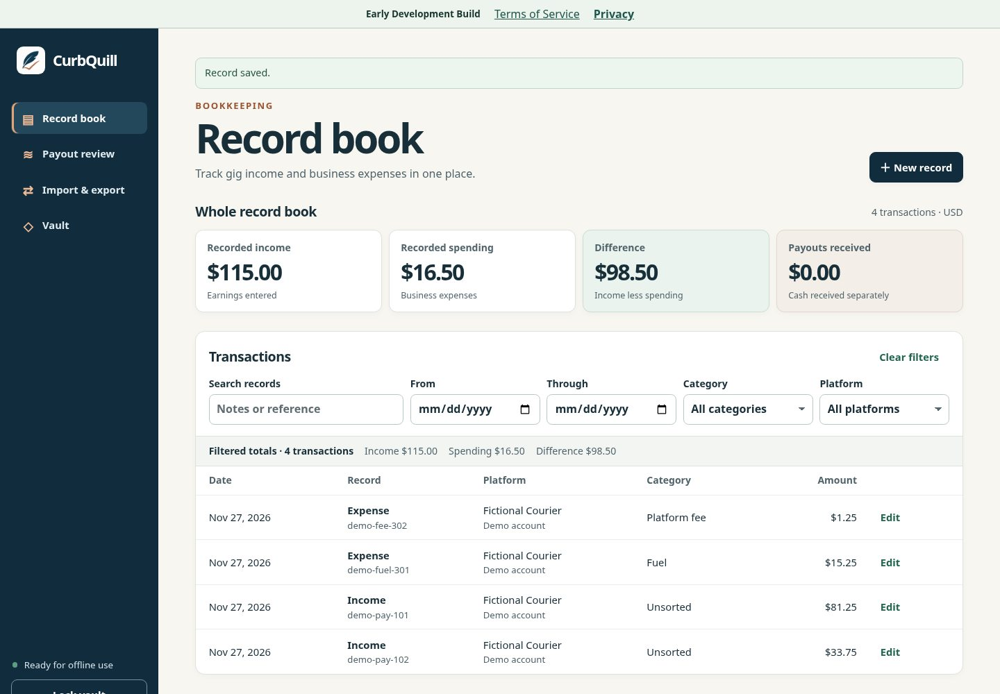
Desktop browser capture · fictional demonstration. - Search and filters
- Find a note or reference, narrow the date range, or filter by category and platform. The filtered count and totals cover every matching page.
Desktop browser capture · fictional demonstration. - Duplicates and corrections
- The app checks repeated references and flags similar entries for review. Correct an existing entry with a reason so the book retains a history of the change.
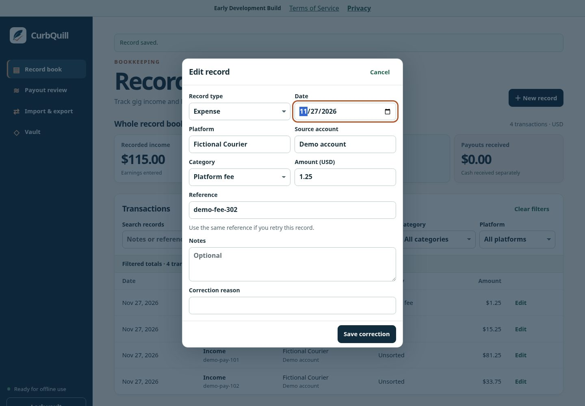
Desktop browser capture · fictional demonstration.


Reconcile payouts
- Split a payout across earnings
- Record the deposit, then assign all or part of one or more earnings from the same platform and account. A single earning can retain a balance for a later payout.
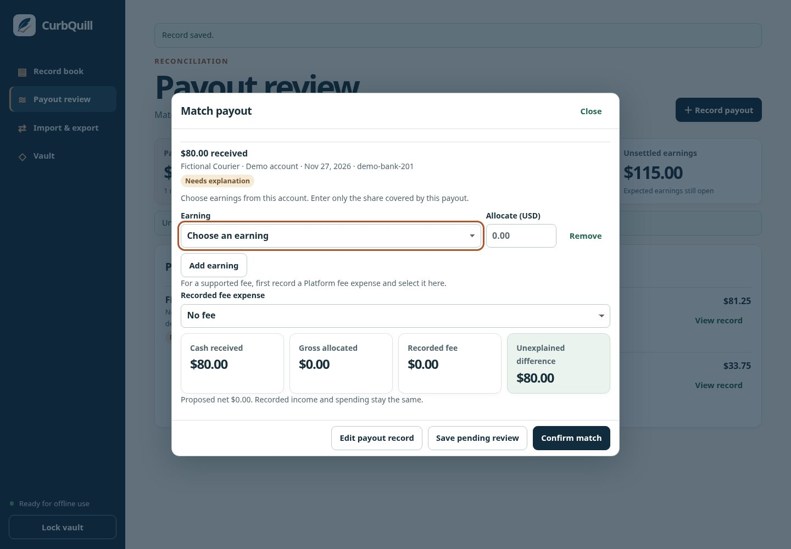
Desktop browser capture · fictional demonstration. - Account for fees
- Link a recorded platform-fee expense. A running preview compares gross earnings, the fee and expected net pay with the cash received, showing any unexplained difference.
Desktop browser capture · fictional demonstration. - Pending and confirmed matches
- Save an unfinished match and return when you have the missing information. Confirming a balanced match settles the allocated amounts. You can reopen or revise it with a reason and inspect earlier reviews.
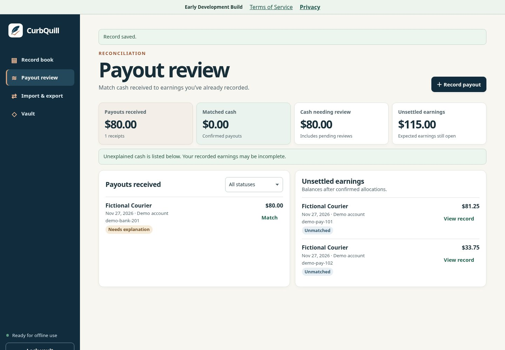
Desktop browser capture · fictional demonstration. 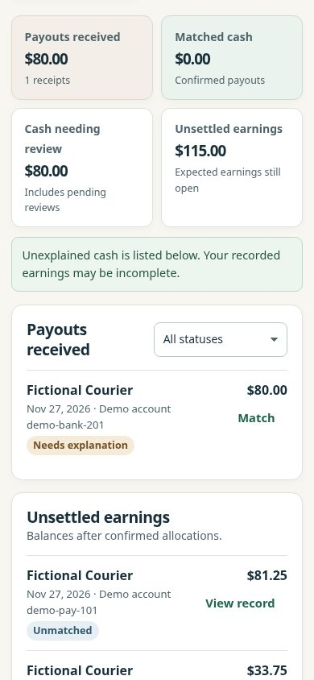
390 × 844 phone viewport · fictional demonstration. Not a physical iPhone. - Outstanding balances
- Filter payouts by review status and see matched cash, cash awaiting review and earnings still outstanding. Open a partly settled earning to check how much remains.
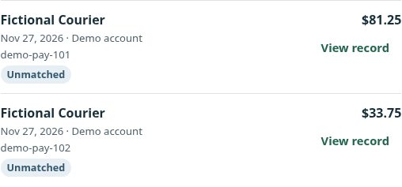
Desktop browser capture · fictional demonstration.


Bring records in and out
- CSV column mapping
- Load a local CSV, match its columns to the record fields and set defaults for platform, account or record type. Use a batch reference for rows without IDs and save the mapping for the next statement.
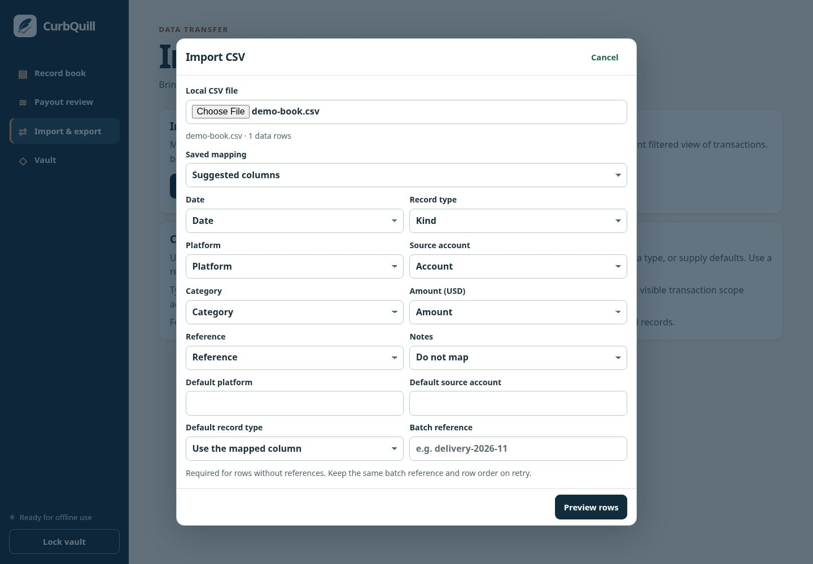
Desktop browser capture · fictional demonstration. - Import preview
- Review each row before saving. The preview identifies existing records, possible duplicates, invalid values and conflicting references so you can check what enters the book.
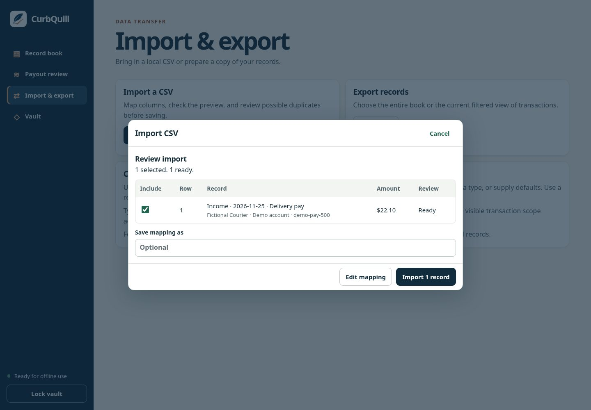
Desktop browser capture · fictional demonstration. - CSV export
- Download all income, expenses and payouts, or just the transactions matching your filters. CSV files are readable in a spreadsheet and contain plaintext amounts, notes and references.
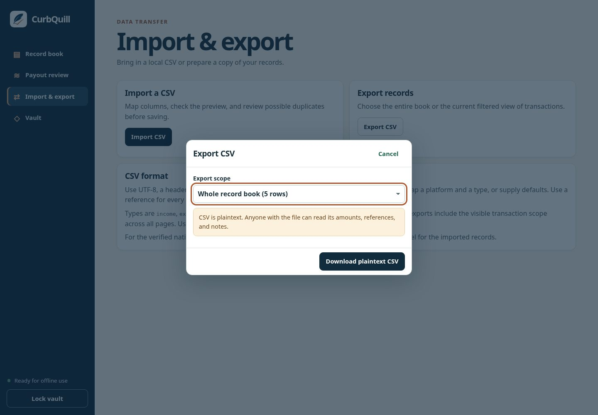
Desktop browser capture · fictional demonstration.


Use it on the go
- Offline use and installation
- Open the site online for initial setup. Its offline indicator shows when it is ready for disconnected use. Supported browsers offer installation or Add to Home Screen, and the app shows when an update is available.
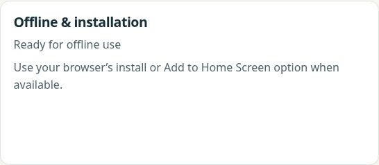
Desktop browser capture · fictional demonstration. - Vault locking
- Lock the book manually or set an idle timeout of 1, 5, 15 or 30 minutes. Enter your vault password to resume.
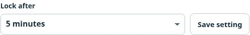
Desktop browser capture · fictional demonstration.